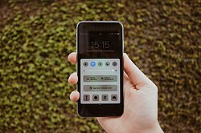

Nutitelefon
Pildi allosas laual asetseb nutitelefon, mille ekraanil on näha erinevad rakenduste ikoonid. Nutitelefon toimib kaasaskantava arvutina, mis tagab pideva ühenduse interneti, teavituste ja suhtluskanalitega. Tänapäeva töökohal kasutatakse seda sageli kahefaktoriliseks autentimiseks, kiireteks kõnedeks või multifunktsionaalseks lisaseadmeks.
Loe lähemalt: Vikipeedia — Nutitelefon
